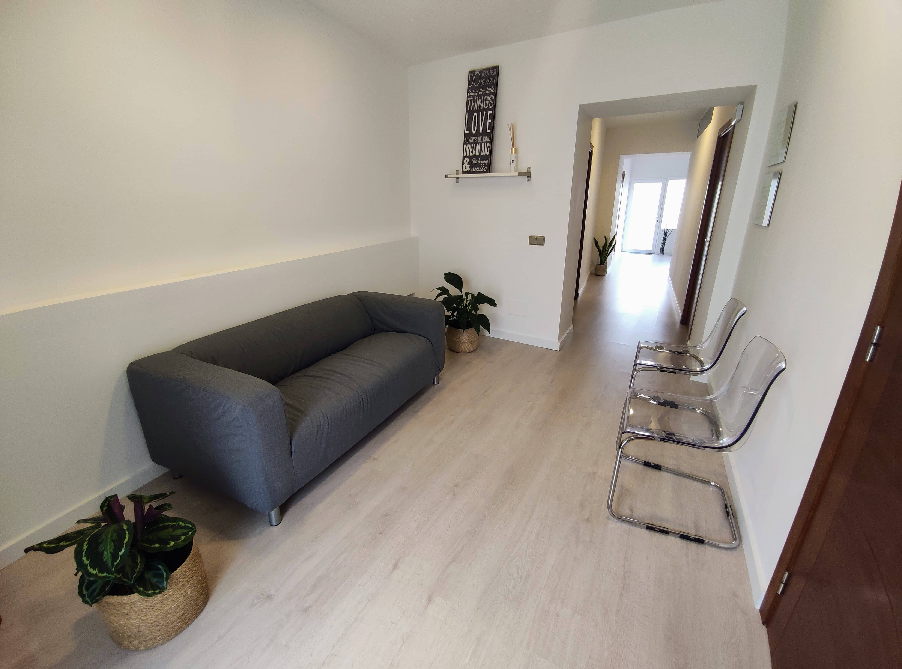

Nuestro centro

Desde el año 2007 ofrecemos un espacio destinado a la salud adaptado a las necesidades de todos los pacientes.
Nuestras instalaciones constan de sala de tratamientos, despacho y un espacio muy especial para nuestros pacientes pediátricos, además de una cómoda sala de espera y baño adaptado.